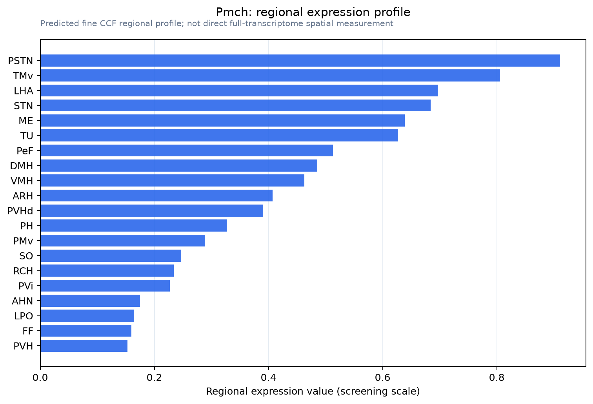

Pmch
Spatial tier: RESTRICTED · Class: OTHER · Top region: PSTN (Parasubthalamic nucleus) · Positive regions: 15/554
48.9Discovery Score
40.9Targetability Score
CEvidence grade C
What this means: Pmch: fine CCF profile is restricted toward PSTN (top regions: PSTN, TMv, LHA, STN, ME; 15 positive regions); direct spatial validation is still required.
Direct spatial evidence
MERFISH REGION LOCATOR

Regional expression figure

Predicted WMB × fine-CCF profile; not direct full-transcriptome spatial measurement.
Spatial profile
Evidence and specificity
- Evidence status
- PREDICTED_FINE
- Direct sources
- None; predicted localization only
- Exclusive threshold
- 12 positive regions out of 554
- Spatial specificity
- 0.406
- Top-region fraction
- 0.087
- Filter status
- PASS
Interpretation limits
- Cell-type-to-region projection is imputed expression, not direct spatial measurement.
- Adult reference atlases do not establish stability across age, sex, strain, state, or disease.
- Transcript abundance does not guarantee protein abundance or genetic-tool performance.